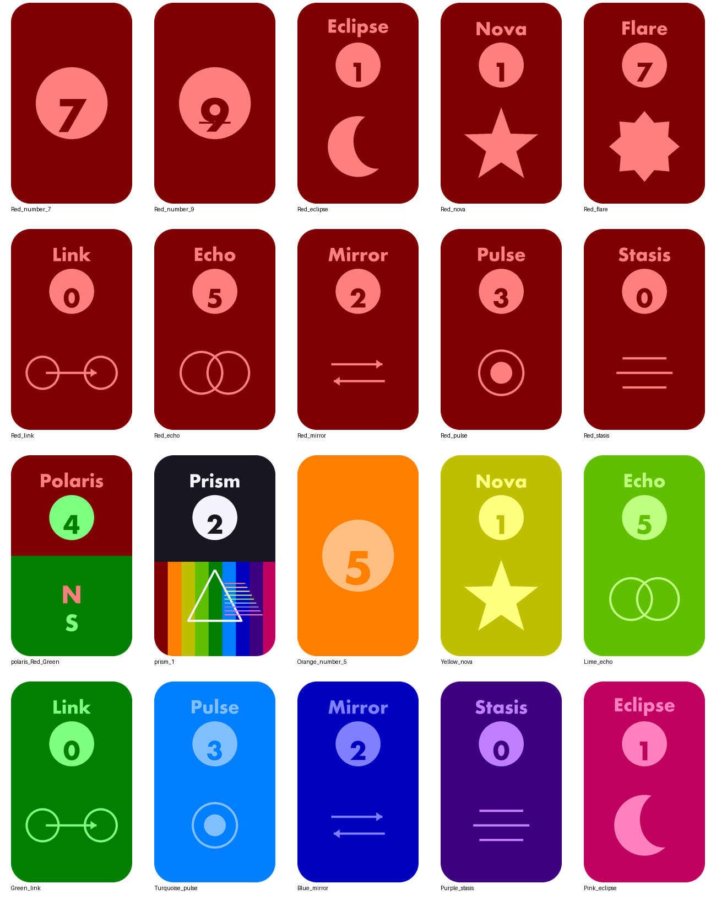
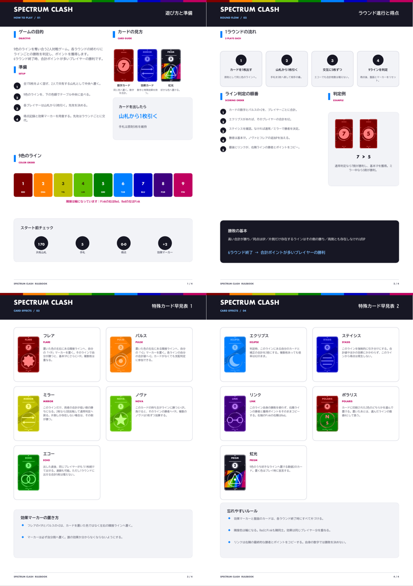

PROJECT 03 / GAME DESIGN
Spectrum
Clash
色と数字、特殊効果を組み合わせ、9色のラインを奪い合う。AIとの対話から生まれた、2人対戦のオリジナルカードゲームです。

EXPERIMENT
AIにゲームを考えさせたら、
何ができるだろう。
ベースとなるルールだけを与え、そこからAIに自由な発想をさせたら、どんなカードゲームが生まれるのか。その実験から制作が始まりました。
提案をそのまま使うのではなく、カードの見た目やルールの土台を作り、テストプレイの結果を見ながら効果とバランスを調整しています。
一手ごとに色の勢力が変わり、短い時間の中で状況が目まぐるしく動く。
CARDS & RULES
数字だけでは終わらない、色ごとの駆け引き

WHAT I LEARNED
アイデアを出すAIと、
遊びを判断する人。
AIは大量の案を出せますが、「実際に遊んで楽しいか」「勝ち筋が一つに偏っていないか」は、テストプレイして初めて分かります。特殊効果の強さを調整する過程は、人とAIがそれぞれ得意なことを持ち寄る制作になりました。
今後もルールの違うカードゲームをAIに提案してもらい、実際に遊べる形まで持っていく実験を続けます。